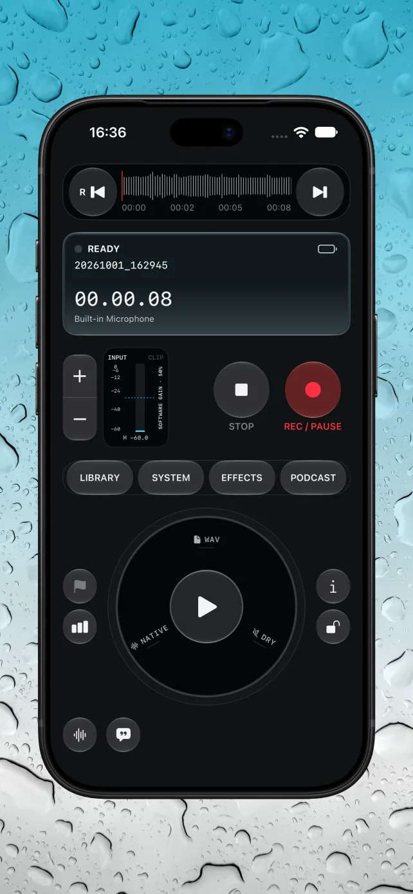
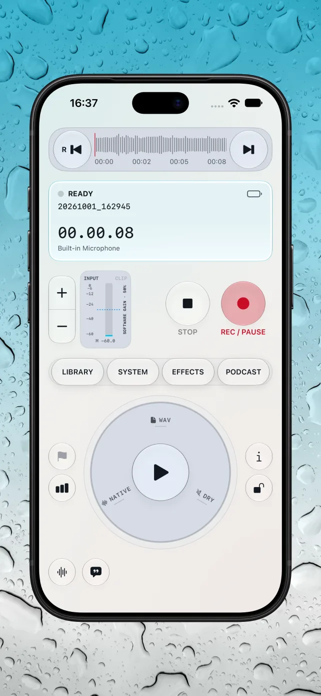
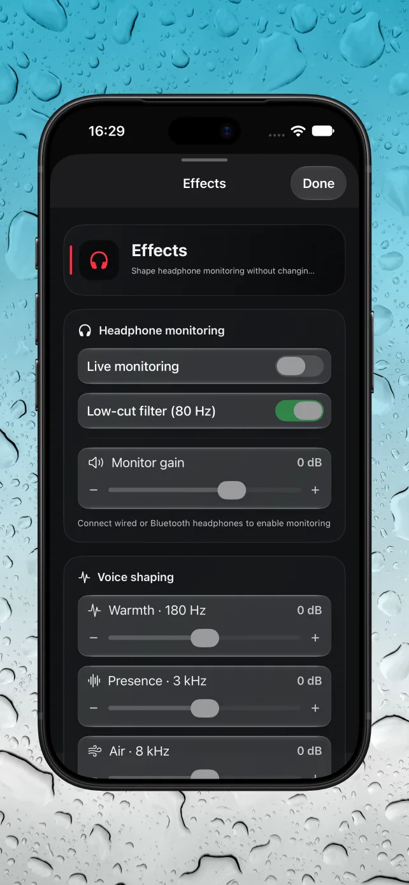
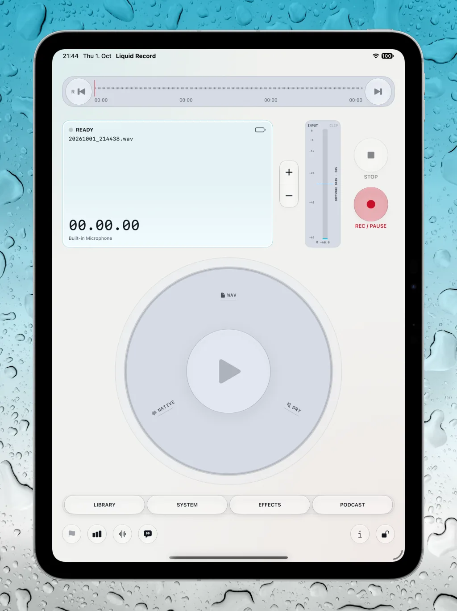

Keep your eyes on the sound.
Record WAV audio, pause and resume, and watch live input levels with peak and clipping indicators. Use compatible external microphones and adjust input gain from the console.
NATIVE AUDIO · IPHONE & IPAD
Capture the conversation. Shape the sound. Build your podcast. A tactile recording console with serious tools, wherever inspiration finds you.
In Apple review · Not available to download yet
WAVOriginal audio
On-deviceSupported transcription
One-timeNo subscription

FROM FIRST TAKE TO FINAL EPISODE
Record WAV audio, pause and resume, and watch live input levels with peak and clipping indicators. Use compatible external microphones and adjust input gain from the console.
Listen through headphones with low-cut filtering, tonal shaping, and ambience. Monitoring effects change what you hear—not the dry original recording.
Scrub the waveform, trim your take, add fades, and capture markers and timed notes. Import and export through Apple Files, including exporting copies to a chosen folder.
Organize recordings, edit your podcast title, and transcribe on supported devices and languages. Create cover art with Image Playground where available, or import your own image.
BUILT AROUND THE RECORDING
Native controls. Light and dark appearances. An iPad layout that gives your recording room to breathe.
A CLOSER LOOK
Actual app screenshots, from the recording console to monitoring and the larger iPad workspace.



TRY IT. THEN MAKE MORE.
Start with one recording and its playback for free. Unlock unlimited recording and the production tools when you’re ready to go further.
€9.99 one-time purchase in Germany
Planned in-app purchase. Local prices may vary. No subscription.
A second recording requires Full Access. Deleting the free recording does not reset the free allowance. Device-dependent capabilities remain subject to hardware, OS, and language availability.
Read the app documentationPRIVATE BY DESIGN
Recordings and project data are stored locally in the app. Transcription runs on-device where supported. You decide when to export or share your audio.
Store purchases use Apple’s services. Linking an RSS feed contacts its provider. Files providers, backups, and destinations you choose may use their own cloud services.
Read the privacy policyLink a public Spotify show and RSS feed to organize episode information. Export your audio and upload it manually on Spotify for Creators. Liquid Record does not upload directly or access your Spotify account.
No. On-device transcription depends on device and language support. Image Playground requires a compatible Apple Intelligence device and OS; you can also import existing cover art.
Liquid Record is currently in Apple review. An App Store download link will be added after approval and release.
Coming to iPhone and iPad. Currently in Apple review.
Get in touch